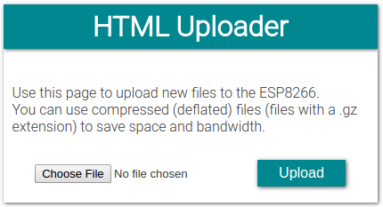

WebSocket communication
Up until now, we've always used links (GET) and HTML forms (POST) to get data from the ESP, or to send data to it. This always resulted in a browser navigation action. There are many situations where you want to send data to the ESP without refreshing the page.
One way to do this is by using AJAX and XMLHTTP requests. The disadvantage is that you have to establish a new TCP connection for every message you send. This adds a load of latency.
WebSocket is a technology that keeps the TCP connection open, so you can constantly send data back and forth between the ESP and the client, with low latency. And since it's TCP, you're sure that the packets will arrive intact.
Controlling RGB LEDs from a web interface using WebSocket
To learn how to use WebSockets, I created this comprehensive example, it uses pretty much everything we've covered so far.
The ESP hosts a webpage with three sliders to set the red, green and blue levels of an RGB LED (or LED strip). There's also a button to turn on a rainbow effect that cycles through the entire color wheel. Color data is transmitted from the browser to the ESP via a WebSocket connection.
You can connect to the ESP directly, using it as an AP, or let the ESP connect to a different AP. You can use mDNS to open the webpage, by browsing to http://esp8266.local.
All files are stored in the ESP's SPIFFS, and you can upload new files, or update files via a web interface.
You can also use the OTA service to upload new firmware (sketches) over Wi-Fi.
Improving readability
When dealing with large and complicated programs, it's a good idea to make abstraction of some things, and create functions with a descriptive name instead of endless lines of meaningless code.
Even if you have lots of comments in your code, it'll be very hard to preserve an overview. Using functions will greatly improve the readability of your code.
So just split up the code into different parts and move all pieces to functions at the bottom of your sketch, or even to different files.
In the following example, the setup was very long and cluttered, so I split it up into several different functions: one to connect to the Wi-Fi, one to start the OTA update service, one to start the SPIFFS ... and so on.
Downloading WebSockets for Arduino
We'll be using the arduinoWebSockets library by Links2004. Download it from GitHub and install it. (Sketch > Include Library > Add .ZIP Library...)
Libraries, constants and globals
At the top of the sketch we'll include the necessary libraries, create some global server and file objects like in the previous examples, and some constants for the host name, AP ssid, passwords, LED pins ...
#include <ESP8266WiFi.h>
#include <ESP8266WiFiMulti.h>
#include <ArduinoOTA.h>
#include <ESP8266WebServer.h>
#include <ESP8266mDNS.h>
#include <FS.h>
#include <WebSocketsServer.h>
ESP8266WiFiMulti wifiMulti; // Create an instance of the ESP8266WiFiMulti class, called 'wifiMulti'
ESP8266WebServer server(80); // Create a webserver object that listens for HTTP request on port 80
WebSocketsServer webSocket(81); // create a websocket server on port 81
File fsUploadFile; // a File variable to temporarily store the received file
const char *ssid = "ESP8266 Access Point"; // The name of the Wi-Fi network that will be created
const char *password = "thereisnospoon"; // The password required to connect to it, leave blank for an open network
const char *OTAName = "ESP8266"; // A name and a password for the OTA service
const char *OTAPassword = "esp8266";
#define LED_RED 15 // specify the pins with an RGB LED connected
#define LED_GREEN 12
#define LED_BLUE 13
const char* mdnsName = "esp8266"; // Domain name for the mDNS responder
You should already be familiar with most of this code. The only new part is the WebSocket server library that is included, and the WebSocket server object, but this shouldn't be a problem.
Setup
void setup() {
pinMode(LED_RED, OUTPUT); // the pins with LEDs connected are outputs
pinMode(LED_GREEN, OUTPUT);
pinMode(LED_BLUE, OUTPUT);
Serial.begin(115200); // Start the Serial communication to send messages to the computer
delay(10);
Serial.println("\r\n");
startWiFi(); // Start a Wi-Fi access point, and try to connect to some given access points. Then wait for either an AP or STA connection
startOTA(); // Start the OTA service
startSPIFFS(); // Start the SPIFFS and list all contents
startWebSocket(); // Start a WebSocket server
startMDNS(); // Start the mDNS responder
startServer(); // Start a HTTP server with a file read handler and an upload handler
}
As you can see, the setup is now much more condensed and gives a much better overview of what it's doing. To understand the program, you don't have to know each individual step that is required to connect to a Wi-Fi network, it's enough to know that it will connect to a Wi-Fi network, because that's what the startWiFi function does.
Loop
bool rainbow = false; // The rainbow effect is turned off on startup
unsigned long prevMillis = millis();
int hue = 0;
void loop() {
webSocket.loop(); // constantly check for websocket events
server.handleClient(); // run the server
ArduinoOTA.handle(); // listen for OTA events
if(rainbow) { // if the rainbow effect is turned on
if(millis() > prevMillis + 32) {
if(++hue == 360) // Cycle through the color wheel (increment by one degree every 32 ms)
hue = 0;
setHue(hue); // Set the RGB LED to the right color
prevMillis = millis();
}
}
}
Same goes for the loop: most of the work is done by the first three functions that handle the WebSocket communication, HTTP requests and OTA updates. When such an event happens, the appropriate handler functions will be executed. These are defined elsewhere.
The second part is the rainbow effect. If it is turned on, it cycles through the color wheel and sets the color to the RGB LED.
If you don't understand why I use millis(), you can take a look at the Blink Without Delay example.
Setup functions
void startWiFi() { // Start a Wi-Fi access point, and try to connect to some given access points. Then wait for either an AP or STA connection
WiFi.softAP(ssid, password); // Start the access point
Serial.print("Access Point \"");
Serial.print(ssid);
Serial.println("\" started\r\n");
wifiMulti.addAP("ssid_from_AP_1", "your_password_for_AP_1"); // add Wi-Fi networks you want to connect to
wifiMulti.addAP("ssid_from_AP_2", "your_password_for_AP_2");
wifiMulti.addAP("ssid_from_AP_3", "your_password_for_AP_3");
Serial.println("Connecting");
while (wifiMulti.run() != WL_CONNECTED && WiFi.softAPgetStationNum() < 1) { // Wait for the Wi-Fi to connect
delay(250);
Serial.print('.');
}
Serial.println("\r\n");
if(WiFi.softAPgetStationNum() == 0) { // If the ESP is connected to an AP
Serial.print("Connected to ");
Serial.println(WiFi.SSID()); // Tell us what network we're connected to
Serial.print("IP address:\t");
Serial.print(WiFi.localIP()); // Send the IP address of the ESP8266 to the computer
} else { // If a station is connected to the ESP SoftAP
Serial.print("Station connected to ESP8266 AP");
}
Serial.println("\r\n");
}
void startOTA() { // Start the OTA service
ArduinoOTA.setHostname(OTAName);
ArduinoOTA.setPassword(OTAPassword);
ArduinoOTA.onStart([]() {
Serial.println("Start");
digitalWrite(LED_RED, 0); // turn off the LEDs
digitalWrite(LED_GREEN, 0);
digitalWrite(LED_BLUE, 0);
});
ArduinoOTA.onEnd([]() {
Serial.println("\r\nEnd");
});
ArduinoOTA.onProgress([](unsigned int progress, unsigned int total) {
Serial.printf("Progress: %u%%\r", (progress / (total / 100)));
});
ArduinoOTA.onError([](ota_error_t error) {
Serial.printf("Error[%u]: ", error);
if (error == OTA_AUTH_ERROR) Serial.println("Auth Failed");
else if (error == OTA_BEGIN_ERROR) Serial.println("Begin Failed");
else if (error == OTA_CONNECT_ERROR) Serial.println("Connect Failed");
else if (error == OTA_RECEIVE_ERROR) Serial.println("Receive Failed");
else if (error == OTA_END_ERROR) Serial.println("End Failed");
});
ArduinoOTA.begin();
Serial.println("OTA ready\r\n");
}
void startSPIFFS() { // Start the SPIFFS and list all contents
SPIFFS.begin(); // Start the SPI Flash File System (SPIFFS)
Serial.println("SPIFFS started. Contents:");
{
Dir dir = SPIFFS.openDir("/");
while (dir.next()) { // List the file system contents
String fileName = dir.fileName();
size_t fileSize = dir.fileSize();
Serial.printf("\tFS File: %s, size: %s\r\n", fileName.c_str(), formatBytes(fileSize).c_str());
}
Serial.printf("\n");
}
}
void startWebSocket() { // Start a WebSocket server
webSocket.begin(); // start the websocket server
webSocket.onEvent(webSocketEvent); // if there's an incomming websocket message, go to function 'webSocketEvent'
Serial.println("WebSocket server started.");
}
void startMDNS() { // Start the mDNS responder
MDNS.begin(mdnsName); // start the multicast domain name server
Serial.print("mDNS responder started: http://");
Serial.print(mdnsName);
Serial.println(".local");
}
void startServer() { // Start a HTTP server with a file read handler and an upload handler
server.on("/edit.html", HTTP_POST, []() { // If a POST request is sent to the /edit.html address,
server.send(200, "text/plain", "");
}, handleFileUpload); // go to 'handleFileUpload'
server.onNotFound(handleNotFound); // if someone requests any other file or page, go to function 'handleNotFound'
// and check if the file exists
server.begin(); // start the HTTP server
Serial.println("HTTP server started.");
}
These are the function definitions of the functions used in the setup. Nothing new here, apart from the startWebSocket function. You just have to start the WebSocket server using the begin method, and then give it a callback function that is executed when the ESP receives a WebSocket message.
Server handlers
This is the code that is executed on certain server-related events, like when an HTTP request is received, when a file is being uploaded, when there's an incoming WebSocket message ... etc.
void handleNotFound(){ // if the requested file or page doesn't exist, return a 404 not found error
if(!handleFileRead(server.uri())){ // check if the file exists in the flash memory (SPIFFS), if so, send it
server.send(404, "text/plain", "404: File Not Found");
}
}
bool handleFileRead(String path) { // send the right file to the client (if it exists)
Serial.println("handleFileRead: " + path);
if (path.endsWith("/")) path += "index.html"; // If a folder is requested, send the index file
String contentType = getContentType(path); // Get the MIME type
String pathWithGz = path + ".gz";
if (SPIFFS.exists(pathWithGz) || SPIFFS.exists(path)) { // If the file exists, either as a compressed archive, or normal
if (SPIFFS.exists(pathWithGz)) // If there's a compressed version available
path += ".gz"; // Use the compressed verion
File file = SPIFFS.open(path, "r"); // Open the file
size_t sent = server.streamFile(file, contentType); // Send it to the client
file.close(); // Close the file again
Serial.println(String("\tSent file: ") + path);
return true;
}
Serial.println(String("\tFile Not Found: ") + path); // If the file doesn't exist, return false
return false;
}
void handleFileUpload(){ // upload a new file to the SPIFFS
HTTPUpload& upload = server.upload();
String path;
if(upload.status == UPLOAD_FILE_START){
path = upload.filename;
if(!path.startsWith("/")) path = "/"+path;
if(!path.endsWith(".gz")) { // The file server always prefers a compressed version of a file
String pathWithGz = path+".gz"; // So if an uploaded file is not compressed, the existing compressed
if(SPIFFS.exists(pathWithGz)) // version of that file must be deleted (if it exists)
SPIFFS.remove(pathWithGz);
}
Serial.print("handleFileUpload Name: "); Serial.println(path);
fsUploadFile = SPIFFS.open(path, "w"); // Open the file for writing in SPIFFS (create if it doesn't exist)
path = String();
} else if(upload.status == UPLOAD_FILE_WRITE){
if(fsUploadFile)
fsUploadFile.write(upload.buf, upload.currentSize); // Write the received bytes to the file
} else if(upload.status == UPLOAD_FILE_END){
if(fsUploadFile) { // If the file was successfully created
fsUploadFile.close(); // Close the file again
Serial.print("handleFileUpload Size: "); Serial.println(upload.totalSize);
server.sendHeader("Location","/success.html"); // Redirect the client to the success page
server.send(303);
} else {
server.send(500, "text/plain", "500: couldn't create file");
}
}
}
void webSocketEvent(uint8_t num, WStype_t type, uint8_t * payload, size_t lenght) { // When a WebSocket message is received
switch (type) {
case WStype_DISCONNECTED: // if the websocket is disconnected
Serial.printf("[%u] Disconnected!\n", num);
break;
case WStype_CONNECTED: { // if a new websocket connection is established
IPAddress ip = webSocket.remoteIP(num);
Serial.printf("[%u] Connected from %d.%d.%d.%d url: %s\n", num, ip[0], ip[1], ip[2], ip[3], payload);
rainbow = false; // Turn rainbow off when a new connection is established
}
break;
case WStype_TEXT: // if new text data is received
Serial.printf("[%u] get Text: %s\n", num, payload);
if (payload[0] == '#') { // we get RGB data
uint32_t rgb = (uint32_t) strtol((const char *) &payload[1], NULL, 16); // decode rgb data
int r = ((rgb >> 20) & 0x3FF); // 10 bits per color, so R: bits 20-29
int g = ((rgb >> 10) & 0x3FF); // G: bits 10-19
int b = rgb & 0x3FF; // B: bits 0-9
analogWrite(LED_RED, r); // write it to the LED output pins
analogWrite(LED_GREEN, g);
analogWrite(LED_BLUE, b);
} else if (payload[0] == 'R') { // the browser sends an R when the rainbow effect is enabled
rainbow = true;
} else if (payload[0] == 'N') { // the browser sends an N when the rainbow effect is disabled
rainbow = false;
}
break;
}
}
Again, most of the code is adapted from the previous examples, only the WebSocket part is new.
There are different types of WebSocket messages, but we're only interested in the text type, because the JavaScript code at the client side sends the color data in text format, as a hexadecimal number, starting with a '#' sign.
Each color is a 10-bit number, so in total, it gives us a 30-bit number for the RGB value.
When the rainbow function is enabled, JavaScript sends an 'R' character, and when it's disabled, it sends a 'N' character.
Let's take a look at the HTML and JavaScript code as well:
HTML
<!DOCTYPE html>
<html>
<head>
<title>LED Control</title>
<link href='https://fonts.googleapis.com/css?family=Roboto:300' rel='stylesheet' type='text/css'>
<link href='main.css' rel='stylesheet' type='text/css'>
<link rel="apple-touch-icon" sizes="180x180" href="/apple-touch-icon-180x180.png">
<link rel="icon" type="image/png" sizes="144x144" href="/favicon-144x144.png">
<link rel="icon" type="image/png" sizes="48x48" href="/favicon.ico">
<link rel="manifest" href="/manifest.json">
<meta name="theme-color" content="#00878f">
<meta content='width=device-width, initial-scale=1.0, maximum-scale=1.0, user-scalable=0' name='viewport'>
<script src="WebSocket.js" type="text/javascript"></script>
</head>
<body>
<center>
<header>
<h1>LED Control</h1>
</header>
<div>
<table>
<tr>
<td style="width:14.4px; text-align: right">R: </td>
<td><input class="enabled" id="r" type="range" min="0" max="1023" step="1" oninput="sendRGB();" value="0"></td>
</tr>
<tr>
<td style="width:14.4px; text-align: right">G: </td>
<td><input class="enabled" id="g" type="range" min="0" max="1023" step="1" oninput="sendRGB();" value="0"></td>
</tr>
<tr>
<td style="width:14.4px; text-align: right">B: </td>
<td><input class="enabled" id="b" type="range" min="0" max="1023" step="1" oninput="sendRGB();" value="0"></td>
</tr>
</table>
<p style="margin:8px 0px">
<button id="rainbow" class="button" style="background-color:#999" onclick="rainbowEffect();">Rainbow</button>
</p>
</div>
</center>
</body>
</html>There's really not much to it, just 3 sliders and a button linked to JavaScript functions.
JavaScript
var rainbowEnable = false;
var connection = new WebSocket('ws://' + location.hostname + ':81/', ['arduino']);
connection.onopen = function () {
connection.send('Connect ' + new Date());
};
connection.onerror = function (error) {
console.log('WebSocket Error ', error);
};
connection.onmessage = function (e) {
console.log('Server: ', e.data);
};
connection.onclose = function () {
console.log('WebSocket connection closed');
};
function sendRGB () {
var r = document.getElementById('r').value** 2 / 1023;
var g = document.getElementById('g').value** 2 / 1023;
var b = document.getElementById('b').value** 2 / 1023;
var rgb = r << 20 | g << 10 | b;
var rgbstr = '#' + rgb.toString(16);
console.log('RGB: ' + rgbstr);
connection.send(rgbstr);
}
function rainbowEffect () {
rainbowEnable = ! rainbowEnable;
if (rainbowEnable) {
connection.send("R");
document.getElementById('rainbow').style.backgroundColor = '#00878F';
document.getElementById('r').className = 'disabled';
document.getElementById('g').className = 'disabled';
document.getElementById('b').className = 'disabled';
document.getElementById('r').disabled = true;
document.getElementById('g').disabled = true;
document.getElementById('b').disabled = true;
} else {
connection.send("N");
document.getElementById('rainbow').style.backgroundColor = '#999';
document.getElementById('r').className = 'enabled';
document.getElementById('g').className = 'enabled';
document.getElementById('b').className = 'enabled';
document.getElementById('r').disabled = false;
document.getElementById('g').disabled = false;
document.getElementById('b').disabled = false;
sendRGB();
}
}
We just create a WebSocket connection object to send data to the ESP.
Then every time a slider is moved, we take the values of the three sliders and we square the color values to get a smoother and more natural curve. We then combine them into a 30-bit number (10 bits per color). Finally, the RGB value gets converted to a hexadecimal string, a '#' is added, and it's sent to the ESP.
When the rainbow button is pressed, the sliders are disabled, and an 'R' is sent to the ESP. When the rainbow button is pressed again, the sliders are enabled, and an 'N' is sent.
Helper functions
Back to the ESP8266 Arduino code again. We need some other functions as well, to convert bytes to KB and MB, to determine file types based on file extensions and to convert a hue angle to RGB values.
String formatBytes(size_t bytes) { // convert sizes in bytes to KB and MB
if (bytes < 1024) {
return String(bytes) + "B";
} else if (bytes < (1024 * 1024)) {
return String(bytes / 1024.0) + "KB";
} else if (bytes < (1024 * 1024 * 1024)) {
return String(bytes / 1024.0 / 1024.0) + "MB";
}
}
String getContentType(String filename) { // determine the filetype of a given filename, based on the extension
if (filename.endsWith(".html")) return "text/html";
else if (filename.endsWith(".css")) return "text/css";
else if (filename.endsWith(".js")) return "application/javascript";
else if (filename.endsWith(".ico")) return "image/x-icon";
else if (filename.endsWith(".gz")) return "application/x-gzip";
return "text/plain";
}
void setHue(int hue) { // Set the RGB LED to a given hue (color) (0° = Red, 120° = Green, 240° = Blue)
hue %= 360; // hue is an angle between 0 and 359°
float radH = hue*3.142/180; // Convert degrees to radians
float rf, gf, bf;
if(hue>=0 && hue<120){ // Convert from HSI color space to RGB
rf = cos(radH*3/4);
gf = sin(radH*3/4);
bf = 0;
} else if(hue>=120 && hue<240){
radH -= 2.09439;
gf = cos(radH*3/4);
bf = sin(radH*3/4);
rf = 0;
} else if(hue>=240 && hue<360){
radH -= 4.188787;
bf = cos(radH*3/4);
rf = sin(radH*3/4);
gf = 0;
}
int r = rf*rf*1023;
int g = gf*gf*1023;
int b = bf*bf*1023;
analogWrite(LED_RED, r); // Write the right color to the LED output pins
analogWrite(LED_GREEN, g);
analogWrite(LED_BLUE, b);
}
To convert from hue to RGB, we use sines and cosines, because the sum of their squares is always one, so the total intensity will always be more or less the same.
This results in the following RGB curves:
{kind=link}
Using the example
Download the example from GitHub and open it in the Arduino IDE. Then add your Wi-Fi credentials (lines 83-85).
Connect an RGB LED with red to pin 15, green to pin 12 and blue to pin 13. Don't forget the current limiting resistors!
Select the SPIFFS size (64KB should be enough, but if you want to upload more files later, you should set it higher). Upload the sketch over Serial, and then upload the SPIFFS files using Tools > ESP8266 Sketch Data Upload.
Wait for it to connect to a Wi-Fi network, or connect to the ESP8266 Access Point using the password 'thereisnospoon', and go to http://esp8266.local. You should get a page that looks like this:
Use the sliders to adjust the color levels of the LED, and press the Rainbow button to enable the rainbow effect.
If you go to http://esp8266.local/edit.html, you can upload or update files:
